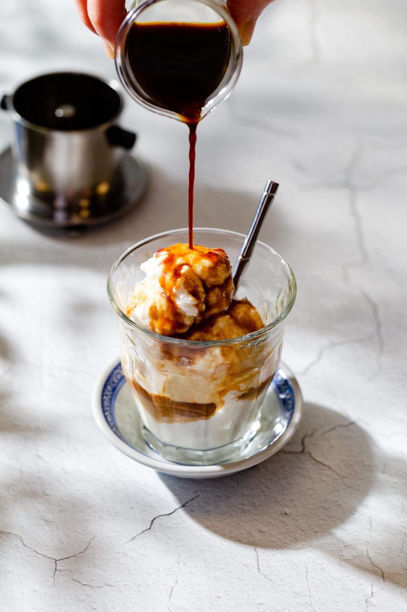

11 công thức pha chế cà phê đơn giản tại nhà không phải ai cũng biết
Nguồn: elle.vn
Chắc hẳn hầu hết chúng ta đều biết cách pha chế các món cà phê đơn giản như cà phê đen, cà phê sữa, bạc xỉu… nhưng chỉ cần bỏ ra thêm một chút thời gian, bạn vẫn có thể tự tay pha chế những món nước mình yêu thích khi không thể đến quán cà phê trong thời gian này.
| STT | Tên |
|---|
| 1. | Vietnamese Coconut Coffee |
| 2. | Egg Coffee |
| 3. | Golden Milk Latte |
| 4. | Banana Coffee Smoothie |
| 5. | Vanilla Coconut Cashew Latte Smoothie |
1. Vietnamese Coconut Coffee

Nguyên liệu:
- 2 tbsp bột cà phê nguyên chất
- 1/2 cup và 1 tbsp nước nóng
- 1/3 cup nước cốt dừa
- 2-3 tsp sữa đặc
- Dừa sấy khô
- Đá viên hoặc đá bào
Cách pha chế:
- Pha cà phê đen như bình thường.
- Đổ cà phê đã pha vào bình lắc (hoặc chai nhựa) và lắc mạnh tay cho đến khi cà phê sủi bọt.
- Cho đá, nước cốt dừa, sữa đặc vào máy xay sinh tố, xay đều cho đến khi hỗn hợp hòa quyện.
- Đổ cà phê đã lắc vào ly, sau đó từ từ đổ phần sữa dừa đã xay vào (lưu ý đổ nhẹ tay để giữ lại phần bọt).
- Rắc một ít dừa khô lên trên và thưởng thức.
2. Egg Coffee

Nguyên liệu:
- 3 tsp bột cà phê
- 2 tsp sữa đặc
- 1 quả trứng gà tươi
- Một ít mật ong và đường
Cách pha chế:
- Pha cà phê đen như bình thường.
- Tách lòng trắng và lòng đỏ trứng.
- Đối với lòng đỏ: cho vào một ít mật ong, dùng máy đánh trứng đánh bông hỗn hợp cho đến khi chuyển sang màu vàng nhạt.
- Đối với lòng trắng: cho vào một ít mật ong và đường, đánh bông đến khi hỗn hợp bông gấp đôi.
- Cho sữa đặc vào ly cà phê, khuấy đều. Khi làm cà phê nóng, cà phê cần phải nóng. Nếu cà phê đã nguội, bạn hãy cho vào lò vi sóng để hâm nóng lại.
- Đổ phần lòng đỏ trứng lên trên, tiếp đến là phần lòng trắng và thưởng thức ngay khi cà phê còn nóng.